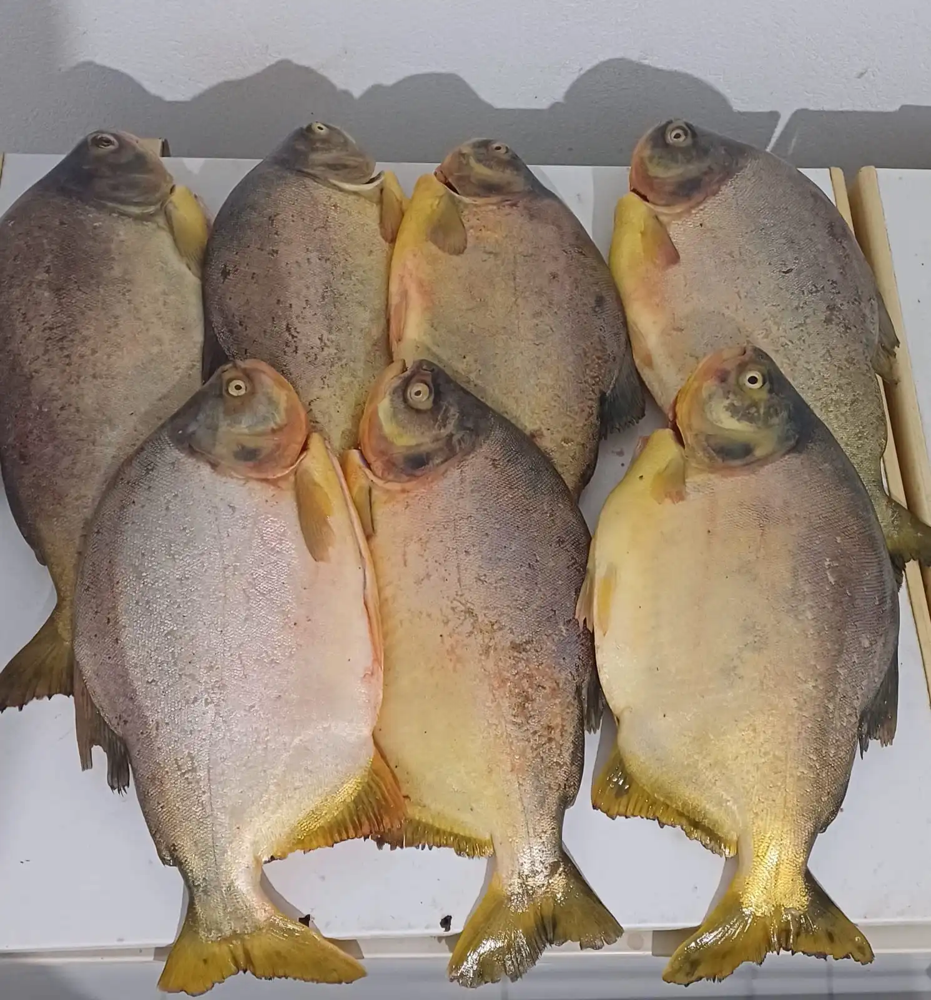
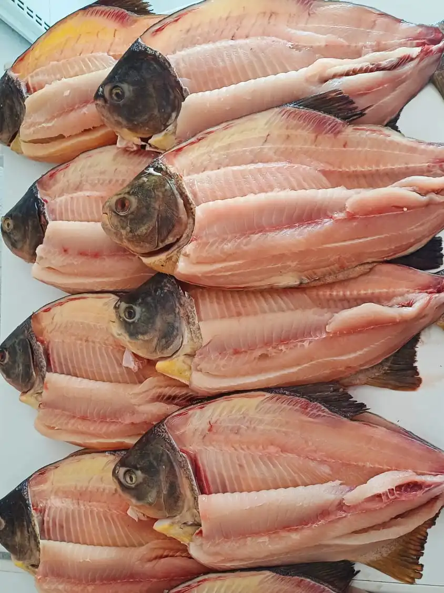
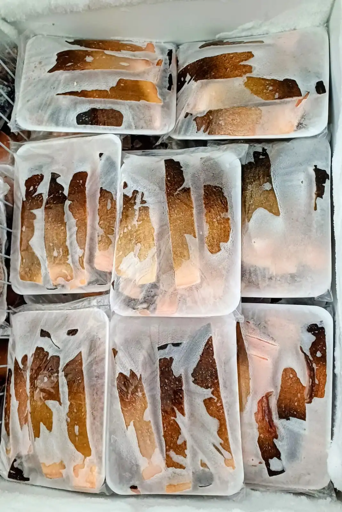

Pacu Fresco
Piaractus mesopotamicus
Escolha o Corte:
Retire na loja: R. Bom Jardim, 379 — Centro, Cáceres.
Pacu Fresco do Rio Paraguai: A Picanha dos Rios do Pantanal
O Pacu (Piaractus mesopotamicus) é, sem dúvida, o peixe mais querido e celebrado do Pantanal mato-grossense. Com seu corpo largo, arredondado e escamas prateadas características, o Pacu habita as águas do Rio Paraguai e seus afluentes, alimentando-se de frutos nativos que caem às margens do rio — sementes de figueira, bocaiuva e palmeira —, o que confere à sua carne um sabor levemente adocicado e absolutamente inconfundível. Sua gordura natural, distribuída uniformemente entre as fibras musculares, é o grande segredo da suculência que tornou o Pacu o peixe favorito das churrasqueiras e mesas de todo o Centro-Oeste brasileiro.
Os Três Cortes do Pacu: Inteiro, Retalhado e Ventrecha
Na Peixaria Rio Paraguai, o Pacu está disponível em três cortes pensados para diferentes ocasiões e técnicas de preparo. O Pacu inteiro — escamado e eviscerado — é ideal para assar na brasa ou no forno, apresentando-se como uma peça inteira espetacular para reuniões e mesas fartas. O Pacu retalhado é cortado em pedaços irregulares perfeitos para caldos encorpados e ensopados regionais temperados com coentro, pimentão e tomate, o preparo mais clássico das margens do Rio Paraguai. Já a Ventrecha é o corte retirado da barriga do peixe, a parte com maior concentração de gordura natural: quando assada na churrasqueira em fogo médio, derrete na boca e resulta num sabor incomparável — por isso é chamada de "picanha do rio" pelos pantaneiros.
Dicas de Preparo: Como Tirar o Melhor do Pacu
O Pacu na brasa com sal grosso e limão-cravo é o clássico absoluto. Tempere com antecedência, faça cortes profundos na pele para o tempero penetrar e asse lentamente com brasas médias, virando uma única vez. Outra opção irresistível é o Pacu na telha: disponha o peixe aberto sobre uma telha de barro coberta com rodelas de tomate, cebola, pimentão, queijo coalho e ervas finas, e leve à grelha por cerca de 25 minutos. Para o ensopado pantaneiro, refogue alho e cebola em azeite quente, adicione os pedaços retalhados, tomate, pimentão e coentro fresco, cubra com água e cozinhe em fogo médio por 20 minutos — o caldo encorpado e dourado resultante é um verdadeiro patrimônio da culinária regional.
Pacu Fresco em Cáceres: Qualidade e Procedência Garantidas
Na Peixaria Rio Paraguai, trabalhamos exclusivamente com Pacu capturado em pesca regulamentada no Rio Paraguai e na bacia pantaneira, respeitando rigorosamente o período de piracema e os tamanhos mínimos determinados pelos órgãos ambientais de Mato Grosso. Cada exemplar é selecionado pelo frescor — avaliamos odor, firmeza da carne e brilho das escamas antes de qualquer corte. Você recebe em casa um produto com qualidade real e toda a procedência do peixe fresco das águas do Pantanal.